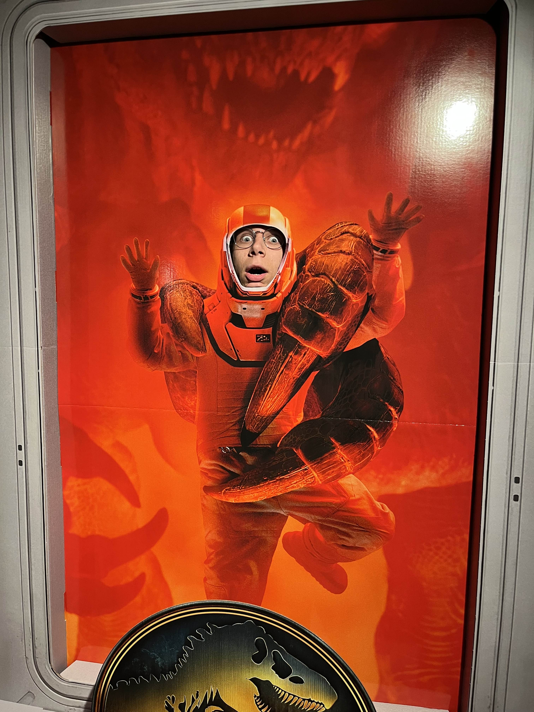

Heel kort door de bocht wilde ik na een tussenjaar weer (intellectueel) productief zijn en een
studie doen. Voor
een
latere studie wil ik graag iets doen waarbij een HBO-propedeuse nodig is en ik de kennis die ik heb opgedaan van
die
studie later kan toepassen. Mijn keuze is ICT geworden, omdat ik benieuwd ben naar hoe ICT in het dagelijks
leven
wordt toegepast en het me een keuze leek die wat in mijn toekomstige carrière zou kunnen betekenen.
Waarom past ICT bij mij?
Ik ben misschien niet enorm ervaren of bekend met het vak, maar toch ben ik ben ik vrij zeker
dat
dit vak bij mij past. De redenen dat ik geloof dat ICT bij mij past zijn:
Ik ben graag technisch bezig, met verschillende apparatuur
Ik ben graag creatief bezig, ik hou van dingen maken en het gevoel dat het me geeft om iets gemaakt te
hebben
Ik heb enorm veel doorzettingsvermogen en eenmaal bezig kan ik niet zomaar stoppen, ik kan dus heel ijverig
zijn als het erop aan komt
De kennis die ik op doe bij deze studie kan ik goed gebruiken in het werkveld waar ik graag in wil werken
in de toekomst

Is dit een goede studiekeuze geweest?
Zoals ik al eerder heb gezegd ben ik niet bepaald ervaren met het vak, of überhaupt bekend
ermee, maar ik merk wel dat ik het interessant vind. Misschien is mijn motivatie nog niet helemaal daar, heb ik nog
veel moeite met het materiaal en de inhoud en zit ik zeker nog niet op rozen. Maar ik ben wel positief over het vak
en ik ben al trots op wat ik tot nu toe al hebt bereikt. Ik hoop dat ik gaandeweg er beter mijn weg in vind en dat
het allemaal wat gestroomlijnder gaat, dat zou fijn zijn natuurlijk. Hoe dan ook ben ik zeker niet negatief en ben
ik benieuwd naar hoe de rest van het jaar zal zijn.